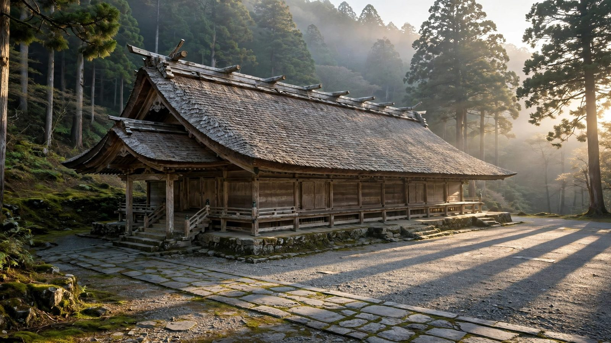
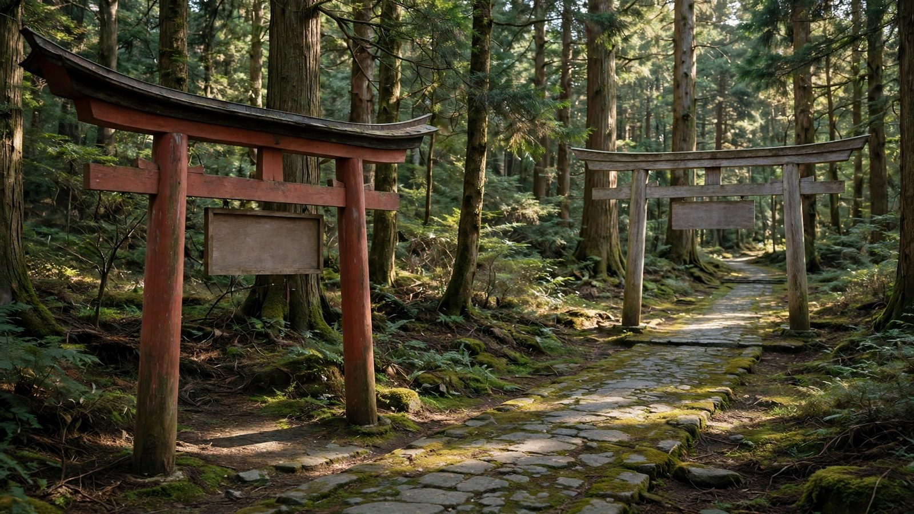

神社うんちく：噂は本当？ 資料で確かめました

神社には「本当かな？」と思う話がたくさんあります。ここでは、よく聞く噂を、神社の公式サイト・神社庁・文化庁・大学などの資料で確かめて、「正しい知識」と「俗説」と「分からないこと」に分けて載せます。
正しい一部正しい俗説分かっていない
ブログ・個人サイト・まとめサイトは使いません。資料に書いてあることだけを書き、書いていないことは「分からない」と書きます。出典の原文は、各項目の「出典」から読めます。引用は、資料のページを取り直して、一字一句ある（原文のとおり）ことを機械で照合しています。
コラム：本殿の向きで、祀られている神様が分かる？

「本殿が向いている方角を見れば、祀られている神様が分かる」という噂を聞きました。本当でしょうか。神社巡りノートの153社について、公式サイト・文化庁・自治体などの資料に、本殿の向きが書かれているかを調べました。
資料で向きが確かめられた18社
| 神社 | 主な祭神 | 向き | 何の向き | 出典 |
|---|---|---|---|---|
| 鹿島神宮 | 武甕槌大神 | 北向き | 本殿 | 資料を開く |
| 大國魂神社 | 大国魂神 | 北向き | 本殿 かつて南向きだった社殿を、1051年に北向きに改めたと神社が説明 | 資料を開く |
| 阿蘇神社 | 健磐龍命 | 東向き | 神殿・境内 神殿3棟と諸門3棟が東向き | 資料を開く |
| 高千穂神社 | 邇邇藝命 | 南東向き | 本殿 | 資料を開く |
| 鳥海山大物忌神社 | 大物忌神 | 南向き | 本殿 | 資料を開く |
| 出羽三山神社 | 月読命 | 南向き | 社殿 | 資料を開く |
| 石清水八幡宮 | 神功皇后 | 南向き | 本殿 | 資料を開く |
| 出雲大社 | 大国主大神 | 南向き | 本殿 建物は南向き。中の御神座は西向き | 資料を開く |
| 熊野那智大社 | 熊野夫須美大神 | 南向き | 社殿 第一殿〜第五殿が南向き、第六殿・御県彦社は東向き | 資料を開く |
| 宮﨑神宮 | 神武天皇 | 南向き | 神殿・境内 | 資料を開く |
| 一之宮貫前神社 | 経津主大神 | 南向き | 神殿・境内 | 資料を開く |
| 大崎八幡宮 | 応神天皇 | 南向き | 社殿 | 資料を開く |
| 大鳥大社 | 日本武尊 | 南向き | 社殿 | 資料を開く |
| 柞原八幡宮 | 応神天皇 | 南向き | 神殿・境内 | 資料を開く |
| 寒川神社 | 寒川比古命 | 南西向き | 本殿 | 資料を開く |
| 鹽竈神社 | 塩土老翁神 | 西向き | 社殿 左右宮は南向き、別宮は西向き。ここでは主祭神の別宮の向き | 資料を開く |
| 住吉大社 | 住吉三神 | 西向き | 本殿 | 資料を開く |
| 嚴島神社 | 宗像三女神 | 北西向き | 社殿 社殿全体の向き（海中に造営） | 資料を開く |
向きの内訳（資料が書く向き）：南10社、北2社、西2社、東・南東・南西・北西が各1社。「何の向き」は、資料が本殿と明記したものは「本殿」、社殿全体は「社殿」、神殿や境内の向きを述べたものは「神殿・境内」としています。残りの135社は、公式サイト・文化庁・自治体・神社庁などの資料を探しましたが、向きの記述が見つからなかったか、サイトを開けませんでした（諏訪大社上社本宮と大神神社は、そもそも本殿を設けていません）。資料に書かれるのは、向きが特徴的な神社に偏る可能性があります。
向きと祭神を対応づける記述は見つからず、出雲大社は建物と御神座で向きが違い、春日大社は向きが変わった例も資料にある。
出典（資料の原文）
従って、御神座は御本殿と同じ南向きではなく、西向きになります。
神社公式（izumooyashiro.or.jp）the shrine was built to face south, and the worship orientation changed to the north.
大学・研究機関（d-museum.kokugakuin.ac.jp）
集落の神社を調べた科研費研究が、祭神の性格で向きが定まると報告。ただし一部地域の調査で、全国共通の決まりとは書かれていない。大國魂神社の公式も「御祭神に関係する方角を向いていたり…各社の由緒によって向きを決めた神社もある」と説明する。
出典（資料の原文）
祭神の性格によって神社の面する向きが定められて来ることになり
大学・研究機関（kaken.nii.ac.jp）神社は南か東を向いています。古くから「天子南面す」と言われるように玉座は南、太陽の方角を向いていました。神様も同じように南を向くのが多いようです。この他、御祭神に関係する方角を向いていたり、太陽の出る方角等各社の由緒によって向きを決めた神社もあり
神社公式（ookunitamajinja.or.jp）
大学の解説は南面が通例とする。ただ文化庁は配置に決まりはなかったとし、伊勢の別宮も土宮だけ東向き。古くは東西軸が優位だったとも。大國魂神社の公式も「神社は南か東を向いている」と説明する。
出典（資料の原文）
全国の神社の多くが南面を通例とするなかで珍しい例である。
大学・研究機関（g.kyoto-art.ac.jp）さて、他の別宮が全て南面するのに対して土宮だけが東面しています。
伊勢神宮（isejingu.or.jp）this was superseded by the south-north dominant Chinese worldview
大学・研究機関（d-museum.kokugakuin.ac.jp）神社は南か東を向いています。古くから「天子南面す」と言われるように玉座は南、太陽の方角を向いていました。神様も同じように南を向くのが多いようです。この他、御祭神に関係する方角を向いていたり、太陽の出る方角等各社の由緒によって向きを決めた神社もあり
神社公式（ookunitamajinja.or.jp）
文化庁は、場所が山や川など自然地形に沿って選ばれ配置に決まりはなかったと説明。春日大社は元は神体山へ東向きとの説。一律の規則は不明。
出典（資料の原文）
場所は聖域と考えられた山や川など自然地形に沿って選定され、社殿の配置も特に定まったものはなかった。
文化庁（online.bunka.go.jp）the Kasuga Shrine (Kasuga Taisha) faced east toward its sacred hill, Mount Mikasa
大学・研究機関（d-museum.kokugakuin.ac.jp）
公式サイトは、御神座は本殿と同じ南向きではなく西向きと明記。国交省の多言語解説も、入口は南側で聖室は西に面すると記す。
出典（資料の原文）
従って、御神座は御本殿と同じ南向きではなく、西向きになります。
神社公式（izumooyashiro.or.jp）大国主神が祀られている内側の聖室は、「上段」の右側の区画にあり、西に面しています。
その他（mlit.go.jp）
本殿が北面なのは文化庁データベースで確認できた。蝦夷への備えは大学系解説の解釈で、神宮公式や文化庁には理由の記述がない。
出典（資料の原文）
三間社流造、向拝一間、檜皮葺、北面
文化庁（online.bunka.go.jp）つまり北方鎮護の社であったことを意味している。
大学・研究機関（g.kyoto-art.ac.jp）
資料では確かめられなかったこと
- 伊勢神宮の内宮・外宮の正殿が何向きか（公式サイトでは別宮が南面との記述のみ確認。正殿の向きを明記した公的資料は見つからなかった）
- 伊勢神宮の土宮だけが東向きの理由（公式サイトも「詳らかにしません」としている）
- 鹿島神宮が北向きである理由（神宮公式・文化庁の資料には記述なし）
- 全国の神社で南向き・東向きなどがそれぞれ何割かという統計
- 社殿の向きを決める一般的な基準（太陽・参道・海などの取り方）を定めた公的な規定（文化庁は『特に定まったものはなかった』と説明）
千木と鰹木で、祭神の性別が分かる？

屋根の上の交差した木（千木）と、横に並んだ丸太（鰹木）。「千木の先の削ぎ方や鰹木の本数で、男神か女神かが分かる」と聞いたことはありませんか。
伊勢の例に倣う神社が多いが規則ではない。論文の調査では285棟中76.50%が適合し、建築史では根拠不確かとされてきた説。
出典（資料の原文）
Many other shrines follow this practice.
大学・研究機関（d-museum.kokugakuin.ac.jp）Analyzing 285 shrine buildings, 76.50% conformed to the theory
大学・研究機関（jstage.jst.go.jp）often considered unsubstantiated
大学・研究機関（jstage.jst.go.jp）some instances like Sumiyoshi Shrine and Kumano Nachi Taisha suggest its relevance
大学・研究機関（jstage.jst.go.jp）
伊勢神宮の正殿で内宮は10本・外宮は9本。国学院大学の事典は伊勢の伝統として記すが、全国共通の決まりとは書かれていない。
出典（資料の原文）
10本（偶数）
伊勢神宮（isejingu.or.jp）9本（奇数）
伊勢神宮（isejingu.or.jp）Many other shrines follow this practice.
大学・研究機関（d-museum.kokugakuin.ac.jp）
神宮公式の比較表に、両正宮の正殿の鰹木の数と千木の削ぎ方の違いが載る。祭神の性別との関係は同ページに記述なし。
出典（資料の原文）
10本（偶数）
伊勢神宮（isejingu.or.jp）9本（奇数）
伊勢神宮（isejingu.or.jp）
資料は千木を本来は構造の補強、今は神聖さを示す象徴と説明し、性別を表す目的とは書いていない。鰹木は貴族の家にもあった。
出典（資料の原文）
but today, most serve as symbols emphasizing the sacred nature of the structure.
大学・研究機関（d-museum.kokugakuin.ac.jp）adorned the homes of members of the court and aristocracy
大学・研究機関（d-museum.kokugakuin.ac.jp）
千木は屋根を組む古い工法の名残とされ、両者とも古代からある。国指定文化財の解説も出雲大社本殿に千木と堅魚木を置くと記す。
出典（資料の原文）
Both date to ancient times.
大学・研究機関（d-museum.kokugakuin.ac.jp）believed to be a vestige of primitive construction practices
大学・研究機関（d-museum.kokugakuin.ac.jp）大棟の上に千木と堅魚木をおく
文化庁（kunishitei.bunka.go.jp）
出雲大社公式は千木7.9m・勝男木5.45mと記すのみ、文化庁も削ぎ方・本数を記さない。例外かどうかは確かめられなかった。
出典（資料の原文）
千木は長さ7.9メートル、勝男木は長さ5.45ｍもあり
神社公式（izumooyashiro.or.jp）大棟の上に千木と堅魚木をおく
文化庁（kunishitei.bunka.go.jp）
資料では確かめられなかったこと
- 出雲大社御本殿の千木の削ぎ方と勝男木の本数（公式・文化庁のページに記述なし）
- 伊勢神宮の外宮の祭神の性別と削ぎ方・本数との関係（神宮公式の建築ページに記述なし）
- 千木の削ぎ方と祭神の性別の説がいつ・なぜ広まったか（論文は千木の削ぎ方が変えられた時期の研究が今後の課題としている）
- 神社本庁が千木・鰹木について定めた公式の基準（今回開けたページには見つからず）
鳥居の色には、決まりがある？

赤い鳥居は稲荷神社だけ？ 白木の鳥居は格が高い？ 鳥居の色にまつわる話を確かめました。
伏見稲荷大社自身が「お稲荷さんだけが朱塗りではない」と説明。嚴島神社の大鳥居も朱塗りと自治体が紹介している。
出典（資料の原文）
ただ、お稲荷さんだけが朱塗りではなく、朱塗りの神社は他にも多くあります。
神社公式（inari.jp）海上にそびえ立つ朱塗りの大鳥居とともに宮島を象徴するシンボルになっています。
自治体（city.hatsukaichi.hiroshima.jp）
朱を魔除けの色とみる説明は神社側にある。ただし魔除けと考える由来は日本古来か中国伝来か諸説あり、定説はない。
出典（資料の原文）
朱色は、魔力に対抗する色ともされていて、古代の宮殿や神社仏閣に多く用いられています。
神社公式（inari.jp）朱を魔除けと考える所以が、日本古代からであるか中国伝来であるかは諸説あり定かではありません
神社本庁（tokyo-jinjacho.or.jp）古来この丹には魔を退ける力があるとされ、貴ばれてきました。
神社公式（niutsuhime.or.jp）
朱の原料の丹は昔から木材の防腐剤に使われ、丹塗りは6世紀以降に中国から伝わったと神社側は説明する。決定的な唯一の理由とまでは書かれていない。
出典（資料の原文）
また朱の原材料は水銀＝丹です。これは昔から木材の防腐剤として使われてきました。
神社公式（inari.jp）六世紀以降に中国から防腐剤の機能をもつ「丹（に）塗り」技術が伝わると
神社本庁（tokyo-jinjacho.or.jp）「丹」とは、辰砂（朱砂）の鉱石より採取される赤い顔料をあらわします。
神社公式（niutsuhime.or.jp）
鳥居の色で神社の格や祭神を区別するという記述は、開いた公的資料の中に見つからなかった。
神社庁の分類は形の系統（神明系・明神系）で、色の規定は書かれていない。材も木・石・コンクリートがあり、明神型の石造や神明型のコンクリート造の例がある。
出典（資料の原文）
これらを大別すると、神明鳥居系と、神明鳥居が装飾的に発展した明神鳥居系の二つになります。
神社本庁（tokyo-jinjacho.or.jp）鉄筋コンクリート造、表面モルタル洗出仕上げの神明鳥居で
文化庁（online.bunka.go.jp）境内西寄りに置かれた石造明神鳥居。
文化庁（online.bunka.go.jp）
明治神宮は2022年に建てた南参道鳥居を素木の杉材とした、と公式の社報で述べている。素木の鳥居の分布や格を述べた資料は確認できなかった。
出典（資料の原文）
最終的に「素木（しらき）で国産のもの」ということで杉に決定しました。
神社公式（meijijingu.or.jp）
資料では確かめられなかったこと
- 神明鳥居・明神鳥居の形の違い（笠木が直線か、両端が反るか）の定義：神社本庁の「鳥居について」(https://www.jinjahoncho.or.jp/omairi/torii/)がメンテナンス中で本文を開けなかった
- 白木の鳥居は朱塗りより格が高いという説の根拠（鳥居の色で神社の格を分ける公的な記述は見つからなかった）
- 伊勢神宮の鳥居の色（宇治橋の鳥居の再利用は公式にあるが、塗装の有無は書かれていなかった）
- 朱色が使われ始めた時期と、鳥居に朱を塗る習慣が定着した時期
参拝の作法は、必ず「二礼二拍手一礼」？

参拝の作法にまつわる「必ず〜しなければならない」を、神社側の説明で確かめました。
二拝二拍手一拝は基本の作法。ただし東京都神社庁は厳格なきまりはないとし、出雲大社は二礼四拍手一礼を正式としている。
出典（資料の原文）
私たちが神社にお参りする際の作法には厳格なきまりはありません。
その他（tokyo-jinjacho.or.jp）二拝・二拍手・一拝のご作法でご参拝ください。
伊勢神宮（isejingu.or.jp）一般的には「２礼２拍手１礼」ですが、出雲大社の正式な参拝作法は「２礼４拍手１礼」となります。
神社公式（izumooyashiro.or.jp）
東京都神社庁は、一礼してくぐるのが丁寧なくぐり方とし、境内を出る際も社殿の方に向き直って一礼するとよいと案内している。
出典（資料の原文）
目上の方のお宅を訪問するような気持ちで、一礼してからくぐるのが丁寧なくぐり方とされています。
その他（tokyo-jinjacho.or.jp）まず鳥居をくぐる前に一揖（いちゆう）をします。
その他（tokyo-jinjacho.or.jp）
中央は正中といい神様の通り道とされ、避けて歩くのが礼儀・敬意の表れとされる。禁止とは書かれず、横切る際の礼の作法も示されている。
出典（資料の原文）
その中央は正中（せいちゅう）といわれ、神さまの通り道とされているので、そこを避けて歩くことが神さまに対する礼儀とされています。
その他（tokyo-jinjacho.or.jp）神社参拝の際、参道の中央を避けて進むのは敬意の表れの１つといえます。
その他（tokyo-jinjacho.or.jp）昔の人たちは真ん中を歩かないように心がけていました。
神社公式（meijijingu.or.jp）
伊勢神宮の手順は最初に水をくみ、最後に残った水で柄を洗う流れ。東京都神社庁は汲む回数を示さず、流水や柄杓のない手水舎は別手順。
出典（資料の原文）
たっぷりと水をくみ、左手を清めます。
伊勢神宮（isejingu.or.jp）残った水で柄杓の
伊勢神宮（isejingu.or.jp）最後に水を入れた柄杓を立て、柄に水を流してから柄杓置きに伏せて置きます。
その他（tokyo-jinjacho.or.jp）2.両手に水をため口をすすぎます。
神社公式（meijijingu.or.jp）
出雲大社の公式FAQは正式作法を二礼四拍手一礼とし、八拍手は5月14日の例祭のみ。拝礼は神社ごとに異なることがある。
出典（資料の原文）
ただし、８拍手は年に１度の例祭（勅祭）の時のみの作法としています。
神社公式（izumooyashiro.or.jp）ご本殿以外のご社殿をお参りの際にも、この作法にてご参拝下さい。
神社公式（izumooyashiro.or.jp）
伊勢神宮の公式は、参拝者に二拝・二拍手・一拝を案内している。八開手そのものは公式ページで確認できなかった。
出典（資料の原文）
二拝・二拍手・一拝のご作法でご参拝ください。
伊勢神宮（isejingu.or.jp）肩幅程度に両手を開き、2回拍手を打ちます。
伊勢神宮（isejingu.or.jp）
資料では確かめられなかったこと
- 神社本庁の公式サイト（参拝方法・手水舎・境内の各ページ）は取得時にメンテナンス中（HTTP 503）で本文を読めなかったため、神社本庁自身の記述は確認できなかった。
- 伊勢神宮の八開手（八度拝）が神職の作法として存在するか、その内容は、公式ページ・指定資料では確認できなかった。
- 手水で柄杓の水を何回に分けるかを数字で定めた公的資料は見つからなかった。
- 二礼二拍手一礼（二拝二拍手一拝）が現在の形に広まった時期・経緯は、指定資料では確認できなかった。
更新: 2026-11-27